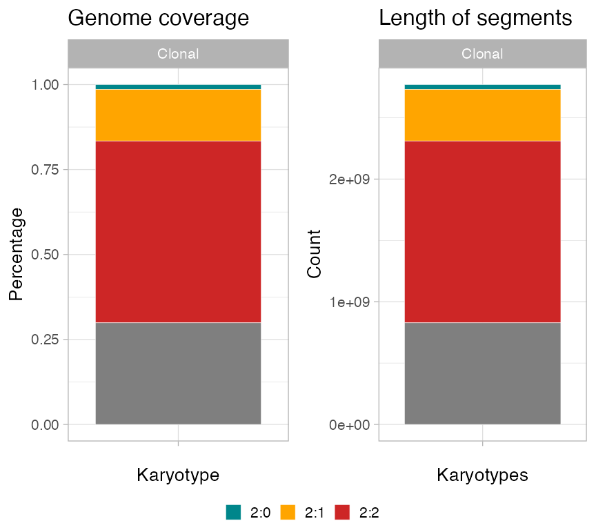
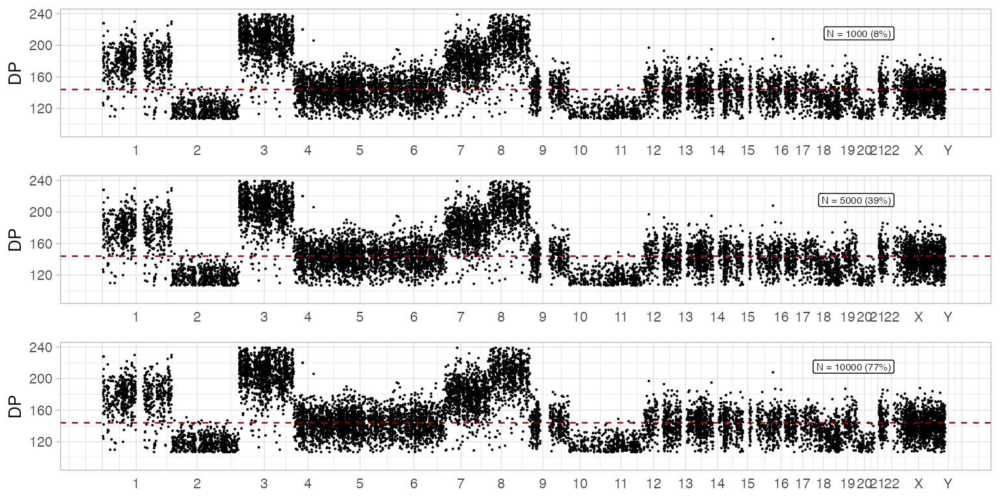

library(CNAqc)
#> Warning: replacing previous import 'cli::num_ansi_colors' by
#> 'crayon::num_ansi_colors' when loading 'BMix'
#> Warning: replacing previous import 'crayon::%+%' by 'ggplot2::%+%' when loading
#> 'BMix'
#> ✓ Loading BMix, 'Binomial and Beta-Binomial univariate mixtures'. Support : <https://caravagnalab.github.io/BMix/>
#> Warning: package 'tidyr' was built under R version 4.0.5
#> Warning: package 'readr' was built under R version 4.0.5
#> Warning: package 'dplyr' was built under R version 4.0.5
#> Warning: package 'crayon' was built under R version 4.0.5
#> ✓ Loading CNAqc, 'Copy Number Alteration quality check'. Support : <https://caravagn.github.io/CNAqc/>
require(dplyr)Plotting copy number segments
All plotting functions use ggplot and multi-panel figures assembled with either ggpubr and cowplot. We work with the template dataset.
# Dataset available with the package
data('example_dataset_CNAqc', package = 'CNAqc')
x = CNAqc::init(
example_dataset_CNAqc$snvs,
example_dataset_CNAqc$cna,
example_dataset_CNAqc$purity,
ref = 'hg19')
#> [ CNAqc - CNA Quality Check ]
#> ℹ Using reference genome coordinates for: hg19.
#> ℹ Drivers are annotated, but 'gene' column is missing, using mutation location.
#> ✓ Fortified calls for 12963 somatic mutations: 12963 SNVs (100%) and 0 indels.
#> ! CNAs have no CCF, assuming clonal CNAs (CCF = 1).
#> ✓ Fortified CNAs for 267 segments: 267 clonal and 0 subclonal.
#> ✓ 12963 mutations mapped to clonal CNAs.
print(x)
#> ── [ CNAqc ] 12963 mutations in 267 segments (267 clonal, 0 subclonal). Genome
#>
#> ── Clonal CNAs
#>
#> 2:2 [n = 7478, L = 1483 Mb] ■■■■■■■■■■■■■■■■■■■■■■■■■■■ { CTCF }
#> 4:2 [n = 1893, L = 331 Mb] ■■■■■■■
#> 3:2 [n = 1625, L = 357 Mb] ■■■■■■
#> 2:1 [n = 1563, L = 420 Mb] ■■■■■■ { TTN }
#> 3:0 [n = 312, L = 137 Mb] ■
#> 2:0 [n = 81, L = 39 Mb] { TP53 }
#> 16:2 [n = 4, L = 0 Mb]
#> 25:2 [n = 2, L = 1 Mb]
#> 3:1 [n = 2, L = 1 Mb]
#> 106:1 [n = 1, L = 0 Mb]
#> ℹ Sample Purity: 89% ~ Ploidy: 4.
#> ℹ There are 3 annotated driver(s) mapped to clonal CNAs.
#> chr from to ref alt DP NV VAF driver_label is_driver
#> chr2 179431633 179431634 C T 117 77 0.6581197 TTN TRUE
#> chr16 67646006 67646007 C T 120 54 0.4500000 CTCF TRUE
#> chr17 7577106 7577107 G C 84 78 0.9285714 TP53 TRUEFunction plot_segments plots all the genome, annotating in the caption summmary statistics. By default, it plots the major and minor alleles for each segment as red and blue bars. In the bottom, each circle annotates a breakpoint in the segments; grays are breakpoints of samples that are shown in the plot. Since by default this plot has limited y-axis, breakpoints of segments outside the plot (e.g. very high amplifications) are in black.
Since x has drivers annotated, these are also plot with a colour that reflects their karyotype. Areas in the genome that are mapped to the most prevalent karyotype (here, "2:2"), are shadowed by default.
# Default plot
plot_segments(x)
#> Scale for 'fill' is already present. Adding another scale for 'fill', which
#> will replace the existing scale.
An alternative circular layout plot is available (default parameters).
# Circular layout
plot_segments(x, circular = TRUE)
Custom segments plot
# Shadow other karyotypes
plot_segments(x, highlight = c("2:1", "2:0", "2:2")) + labs(title = "Annotate different karyotypes")
#> Scale for 'fill' is already present. Adding another scale for 'fill', which
#> will replace the existing scale.
# Subset the genome
plot_segments(x, chromosomes = 'chr17') + labs(title = "Chromosome 17 zoom")
#> Scale for 'fill' is already present. Adding another scale for 'fill', which
#> will replace the existing scale.
plot_segments(x, chromosomes = c('chr17', 'chr13')) + labs(title = "Chromosome 17 and 13 zoom")
#> Scale for 'fill' is already present. Adding another scale for 'fill', which
#> will replace the existing scale.
# Total copy number
plot_segments(x, cn = 'total') + labs(title = "Total copy number")
#> Scale for 'fill' is already present. Adding another scale for 'fill', which
#> will replace the existing scale.
Subclonal CNAs
To show subclonal copy numbers we need to use the PCAWG object released with the package.
print(CNAqc::example_PCAWG)
#> ── [ CNAqc ] 12400 mutations in 552 segments (486 clonal, 66 subclonal). Genome
#>
#> ── Clonal CNAs
#>
#> 3:0 [n = 1772, L = 414 Mb] ■■■■■■■■■■■■■■■■■■■■■■■■■■■ { CDK12 }
#> 2:2 [n = 1713, L = 277 Mb] ■■■■■■■■■■■■■■■■■■■■■■■■■■
#> 2:1 [n = 1479, L = 289 Mb] ■■■■■■■■■■■■■■■■■■■■■■
#> 3:1 [n = 1444, L = 221 Mb] ■■■■■■■■■■■■■■■■■■■■■■
#> 2:0 [n = 949, L = 320 Mb] ■■■■■■■■■■■■■■ { TP53 }
#> 3:2 [n = 491, L = 54 Mb] ■■■■■■■
#> 4:1 [n = 445, L = 49 Mb] ■■■■■■■
#> 1:1 [n = 320, L = 104 Mb] ■■■■■
#> 4:2 [n = 310, L = 34 Mb] ■■■■■
#> 5:0 [n = 110, L = 20 Mb] ■■
#>
#> ── Subclonal CNAs (showing up to 10 segments)
#>
#> chr13@62300908 [n = 231, L = 24.27 Mb] 2:0 (0.08) 2:1 (0.92) ■■■■■■■■■■
#> chr1@176138962 [n = 216, L = 25.93 Mb] 2:1 (0.26) 2:2 (0.74) ■■■■■■■■■
#> chr1@220232950 [n = 137, L = 27.02 Mb] 2:1 (0.35) 2:2 (0.65) ■■■■■
#> chr1@91503321 [n = 133, L = 14.64 Mb] 2:1 (0.25) 2:2 (0.75) ■■■■■
#> chr18@30575049 [n = 129, L = 29.95 Mb] 1:0 (0.32) 1:1 (0.68) ■■■■■
#> chr9@16500688 [n = 116, L = 13.48 Mb] 2:1 (0.87) 2:2 (0.13) ■■■■■
#> chr1@48302609 [n = 111, L = 21.73 Mb] 2:1 (0.26) 2:2 (0.74) ■■■■
#> chr8@159286 [n = 110, L = 27.39 Mb] 1:0 (0.06) 1:1 (0.94) ■■■■
#> chr13@96297358 [n = 110, L = 17.85 Mb] 2:0 (0.09) 2:1 (0.91) ■■■■
#> chr10@7016917 [n = 95, L = 11.51 Mb] 2:1 (0.67) 2:2 (0.33) ■■■■
#> ℹ Sample Purity: 88.5% ~ Ploidy: 3.
#> ℹ There are 2 annotated driver(s) mapped to clonal CNAs.
#> chr from to ref alt DP NV VAF driver_label is_driver
#> chr17 7577058 7577058 C A 26 23 0.8846154 TP53 TRUE
#> chr17 37680973 37680973 C T 41 39 0.9512195 CDK12 TRUENote that the segments of each subclone have different colours; the CCF is not reported in this plot.
plot_segments(CNAqc::example_PCAWG)
Comparing multiple calls
If you want to compare multiple CNAqc objects you can use plot_multisample_CNA. Here we show it by combining twice x with some changes in its calls, and putting together another sample.
This type of plot shows only clonal CNAs.
y = CNAqc::init(
example_dataset_CNAqc$snvs,
example_dataset_CNAqc$cna %>%
mutate(
Major = ifelse(chr %in% c("chr3", "chr4", "chr1"), 1, Major),
minor = ifelse(chr %in% c("chr3", "chr4", "chr1"), 1, minor)
),
example_dataset_CNAqc$purity,
ref = 'hg19')
#> [ CNAqc - CNA Quality Check ]
#> ℹ Using reference genome coordinates for: hg19.
#> ℹ Drivers are annotated, but 'gene' column is missing, using mutation location.
#> ✓ Fortified calls for 12963 somatic mutations: 12963 SNVs (100%) and 0 indels.
#> ! CNAs have no CCF, assuming clonal CNAs (CCF = 1).
#> ✓ Fortified CNAs for 267 segments: 267 clonal and 0 subclonal.
#> ✓ 12963 mutations mapped to clonal CNAs.
# Comparative CNA plot
plot_multisample_CNA(list(`Original` = x, `Copy` = x, `Faked_diploid` = y, `PCAWG` = CNAqc::example_PCAWG))
Plotting segments summaries
plot_karyotypes gives two visualizations, based on its parameter type:
-
type = 'percentage', reporting the proportion of genome covered by each karyotypes (default); -
type = 'number', reporting the counts of segments per karyotype.
The package uses a pre-set color schema to colour simple CNAs.
ggpubr::ggarrange(
plot_karyotypes(x),
plot_karyotypes(x, type = 'number'),
common.legend = TRUE,
legend = 'bottom'
)
You can also plot the segments’ length distribution, which is used to detect fragmentation patterns in the segments.

Plotting mutations
You have a function to plot all your data histograms
ggpubr::ggarrange(
plot_data_histogram(x, which = 'VAF'),
plot_data_histogram(x, which = 'DP'),
plot_data_histogram(x, which = 'NV'),
ncol = 3,
nrow = 1
)
#> Warning: Removed 8 rows containing missing values (geom_bar).
If you compute Cancer Cell Fractions (CCF) values, you can use plot_data_histogram(x, which = 'CCF') as well.
Segment-specific VAF distribution
You can inspect the raw VAF distribution per segment, split by chromosome. Each colour represents a distinct segment; we want can use this plot to check that, for every karyotype and chromosome, the VAF distributions are similar.
# Default parameters to filter segments are annotatetd in the plot
inspect_segment(x)
#> Warning: `guides(<scale> = FALSE)` is deprecated. Please use `guides(<scale> =
#> "none")` instead.
#> Warning: Removed 30 rows containing missing values (geom_bar).
You can facet your data histograms and obtain a similar layout
plot_data_histogram(x, which = 'VAF') + facet_grid(karyotype~chr, scales = 'free')
#> Warning: Removed 56 rows containing missing values (geom_bar).
Genome-wide mutation data
Genome-wide plots that follow the layout of plot_segments are avaiable to view the genome-wide distributions of the number of mutations, their VAF and depth. VAF and depth-plotting functions (scatterplots) can subset the input data to speed up rendering and reduce the size of output files - by default N = 5000 points are randomly sampled. Counts plot, instead, bin the genome locations by one megabase (\(10^6\) bases).
# All genome, all data - counts of mutations per megabase
plot_gw_counts(x)
An example effect of downsampling the data is the following
# Different subsamples
ggpubr::ggarrange(
plot_gw_depth(x, N = 1000),
plot_gw_depth(x),
plot_gw_depth(x, N = 10000),
ncol = 1
)
#> Warning: `guides(<scale> = FALSE)` is deprecated. Please use `guides(<scale> = "none")` instead.
#> `guides(<scale> = FALSE)` is deprecated. Please use `guides(<scale> = "none")` instead.
#> `guides(<scale> = FALSE)` is deprecated. Please use `guides(<scale> = "none")` instead.
#> Warning: Removed 24 rows containing missing values (geom_rect).
#> Warning: Removed 24 rows containing missing values (geom_segment).
#> Warning: Removed 1 rows containing missing values (geom_hline).
#> Removed 1 rows containing missing values (geom_hline).
#> Warning: Removed 24 rows containing missing values (geom_rect).
#> Warning: Removed 24 rows containing missing values (geom_segment).
#> Warning: Removed 1 rows containing missing values (geom_hline).
#> Removed 1 rows containing missing values (geom_hline).
#> Warning: Removed 24 rows containing missing values (geom_rect).
#> Warning: Removed 24 rows containing missing values (geom_segment).
#> Warning: Removed 1 rows containing missing values (geom_hline).
#> Removed 1 rows containing missing values (geom_hline).Plotting all data
A one-summary plot can be easily assembled combining the above functions and functions from cowplot or other ggplot-manipulation packages.
# Layout a panel with segments in bottom, and all other genome-wide plots on top.
# Via cowplot we can align plots on the vertical axis, and stretch their relative
# height to obtain a nicer layout.
cowplot::plot_grid(
plot_gw_counts(x),
plot_gw_vaf(x, N = 10000),
plot_gw_depth(x, N = 10000),
plot_segments(x),
align = 'v',
nrow = 4,
rel_heights = c(.15, .15, .15, .8))
#> Warning: `guides(<scale> = FALSE)` is deprecated. Please use `guides(<scale> = "none")` instead.
#> `guides(<scale> = FALSE)` is deprecated. Please use `guides(<scale> = "none")` instead.
#> Scale for 'fill' is already present. Adding another scale for 'fill', which
#> will replace the existing scale.
#> Warning: Removed 24 rows containing missing values (geom_rect).
#> Warning: Removed 24 rows containing missing values (geom_segment).
#> Warning: Removed 1 rows containing missing values (geom_hline).
#> Removed 1 rows containing missing values (geom_hline).
This is actually done by the default S3 plot function, which includes both segments and data histograms